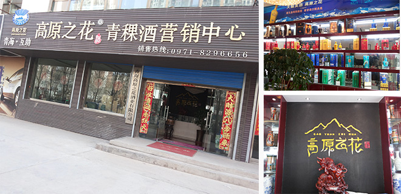

公司简介
当前位置：首页>> 公司简介
青海高原之花酒业有限公司是一家专业生产、经营青稞酒的正规化企业，酒厂前身是《互助县三酒厂》始建于1973年。公司采用古老的传统青稞酒酿酒方式，以纯净无污染的高原山泉水和生长在海拔3000米以上的高寒地区的高原青稞为主要原料，其酿造的青稞酒产品具有饮后头不痛、口不干、醒酒快之独特之处。
《高原之花》系列产品是公司推出的战略性中高端系列白酒产品，公司致力于将"高原之花"系列产品打造成青海省乃至全国中高端政商务用酒市场的典型代表品牌
品牌寓意：高原之花，即格桑花，格桑花喜爱高原的阳光，耐得住雪域的风寒。看上去弱不禁风，可风愈狂，它身愈挺；雨愈打，它叶愈翠；太阳愈曝晒，它开得愈灿烂。 随着季节变幻，颜色也会转变。藏族有一个美丽的传说：不管是谁，只要找到了八瓣格桑花，就找到了幸福。据说格桑花由格桑活佛变成，可以给人们带来吉祥，藏族人民称其为吉祥之花。
《高原之花》酒是藏区人民最喜爱的青稞酒代表品牌之一。她不仅代表着一种花、一种酒、一种吉祥；她更是一种精神的象征，代表着成功人士创业道路上的不屈不挠、不畏困难、乐观、顽强积极向上的成功品质。